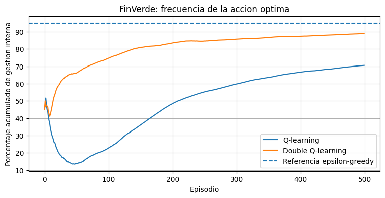
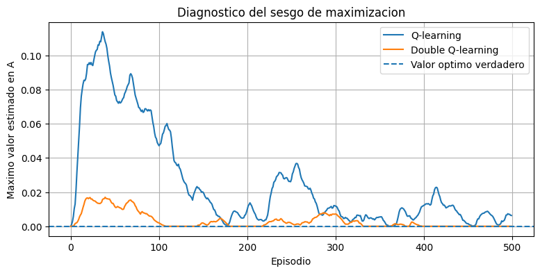
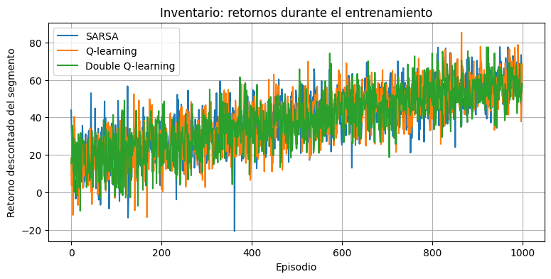
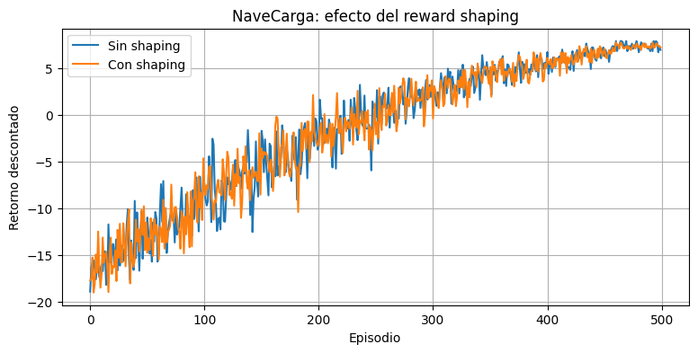

Semana 14 — Double Q-learning y diseño de recompensas#
Modelos de Decisión en el Tiempo — Aprendizaje por refuerzo tabular
En esta sesión estudiaremos dos ideas nuevas:
el sesgo de maximización de Q-learning y su corrección mediante Double Q-learning;
el reward shaping basado en potenciales para acelerar el aprendizaje sin cambiar el problema de decisión.
La programación seguirá la misma progresión de las semanas anteriores:
El código utiliza arreglos de NumPy, ciclos, condicionales y funciones sencillas. No se requieren clases, diccionarios, comprensiones ni funciones anónimas.
Herramientas de la sesión#
Herramienta |
Idea principal |
|---|---|
Q-learning |
Selecciona y evalúa usando la misma tabla, lo que puede producir sobreestimación |
Double Q-learning |
Separa la tabla que selecciona de la tabla que evalúa |
Reward shaping |
Añade una señal de progreso construida a partir de un potencial |
Value Iteration |
Proporciona un benchmark exacto cuando el modelo es conocido |
La diferencia central de Double Q-learning es:
import math
import numpy as np
import matplotlib.pyplot as plt
np.set_printoptions(precision=3, suppress=True)
Ejercicio 1 — Sesgo de maximización#
FinVerde S.A.S.#
En el estado A, la empresa decide entre:
acción 0: gestión interna, recompensa 0 y terminación;
acción 1: tercerizar, recompensa 0 y transición al estado B.
En el estado B se elige una de diez agencias. Cada agencia produce una recompensa aleatoria:
La acción óptima en A es la gestión interna, porque 0 es mayor que la media verdadera de tercerizar, que es -0.1.
1.1 Orden correcto de una actualización de Q-learning#
Cuando se elige tercerizar, el episodio tiene dos transiciones:
de A hacia B, con recompensa 0;
de B al estado terminal, con la recompensa de la agencia.
La transición A→B debe actualizarse usando los valores que existían en B antes de observar la recompensa posterior. En el siguiente episodio, una estimación positiva producida por ruido puede elevar artificialmente el máximo de B.
numero_agencias = 10
alpha_finverde = 0.1
Q_A_demo = np.zeros(2)
Q_B_demo = np.zeros(numero_agencias)
np.random.seed(1)
# Episodio 1: se fuerza la accion tercerizar.
accion_A = 1
# Primera transicion: A hacia B, recompensa 0.
objetivo_A = np.max(Q_B_demo)
Q_A_demo[accion_A] = Q_A_demo[accion_A] + alpha_finverde * (
objetivo_A - Q_A_demo[accion_A]
)
# Segunda transicion: B hacia terminal.
agencia = 0
recompensa_agencia = np.random.normal(-0.1, 1.0)
Q_B_demo[agencia] = Q_B_demo[agencia] + alpha_finverde * (
recompensa_agencia - Q_B_demo[agencia]
)
print("Despues del episodio 1:")
print("Recompensa observada:", recompensa_agencia)
print("Q(A, tercerizar):", Q_A_demo[1])
print("Valores de las agencias:", Q_B_demo)
# Episodio 2: antes de observar una nueva agencia, A usa el maximo actual de B.
objetivo_A = np.max(Q_B_demo)
Q_A_demo[1] = Q_A_demo[1] + alpha_finverde * (
objetivo_A - Q_A_demo[1]
)
print()
print("Al comenzar el episodio 2:")
print("Maximo usado desde B:", objetivo_A)
print("Nuevo Q(A, tercerizar):", Q_A_demo[1])
print("El valor puede quedar positivo aunque la media verdadera sea -0.1.")
Despues del episodio 1:
Recompensa observada: 1.5243453636632416
Q(A, tercerizar): 0.0
Valores de las agencias: [0.152 0. 0. 0. 0. 0. 0. 0. 0. 0. ]
Al comenzar el episodio 2:
Maximo usado desde B: 0.15243453636632417
Nuevo Q(A, tercerizar): 0.015243453636632417
El valor puede quedar positivo aunque la media verdadera sea -0.1.
1.2 Una actualización de Double Q-learning#
Double Q-learning usa dos tablas. Cada transición decide de manera independiente cuál tabla actualizar.
En la transición A→B, si se actualiza Q1:
Q1 selecciona la agencia que parece mejor;
Q2 evalúa esa agencia.
Después, la transición B→terminal realiza una segunda elección independiente de la tabla que será actualizada.
Q1_A_demo = np.zeros(2)
Q2_A_demo = np.zeros(2)
Q1_B_demo = np.zeros(numero_agencias)
Q2_B_demo = np.zeros(numero_agencias)
# Supongamos que episodios anteriores dejaron estimaciones distintas.
Q1_B_demo[2] = 0.40
Q2_B_demo[2] = -0.05
# Transicion A hacia B: se actualiza Q1.
mejor_agencia_segun_Q1 = 2
valor_evaluado_con_Q2 = Q2_B_demo[mejor_agencia_segun_Q1]
Q1_A_demo[1] = Q1_A_demo[1] + alpha_finverde * (
valor_evaluado_con_Q2 - Q1_A_demo[1]
)
print("Q1 selecciona la agencia:", mejor_agencia_segun_Q1)
print("Q1 le asignaba el valor:", Q1_B_demo[mejor_agencia_segun_Q1])
print("Q2 la evalua con el valor:", valor_evaluado_con_Q2)
print("Q1(A, tercerizar) queda en:", Q1_A_demo[1])
# Transicion B hacia terminal: se ejecuta una agencia y se decide nuevamente
# cual tabla actualizar. Esta decision es independiente de la anterior.
agencia_ejecutada = 4
np.random.seed(3)
recompensa_agencia = np.random.normal(-0.1, 1.0)
Q2_B_demo[agencia_ejecutada] = Q2_B_demo[agencia_ejecutada] + alpha_finverde * (
recompensa_agencia - Q2_B_demo[agencia_ejecutada]
)
print()
print("Agencia ejecutada en B:", agencia_ejecutada)
print("Recompensa terminal observada:", recompensa_agencia)
print("Q2 de esa agencia despues de la segunda actualizacion:", Q2_B_demo[agencia_ejecutada])
Q1 selecciona la agencia: 2
Q1 le asignaba el valor: 0.4
Q2 la evalua con el valor: -0.05
Q1(A, tercerizar) queda en: -0.005000000000000001
Agencia ejecutada en B: 4
Recompensa terminal observada: 1.6886284734303185
Q2 de esa agencia despues de la segunda actualizacion: 0.16886284734303186
1.3 Funciones sencillas para desempatar y explorar#
np.argmax siempre devuelve la primera acción cuando existen empates. Para no favorecer artificialmente la acción 0, escogeremos al azar entre todas las acciones que tengan el mayor valor.
def elegir_maximo_aleatorio(valores, numero_acciones):
mejor_valor = valores[0]
for accion in range(1, numero_acciones):
if valores[accion] > mejor_valor:
mejor_valor = valores[accion]
candidatas = np.zeros(numero_acciones, dtype=int)
numero_candidatas = 0
for accion in range(numero_acciones):
if abs(valores[accion] - mejor_valor) < 0.000000000001:
candidatas[numero_candidatas] = accion
numero_candidatas = numero_candidatas + 1
posicion = np.random.randint(numero_candidatas)
accion_elegida = candidatas[posicion]
return accion_elegida
def elegir_epsilon_greedy(valores, numero_acciones, epsilon):
numero_aleatorio = np.random.random()
if numero_aleatorio < epsilon:
accion_elegida = np.random.randint(numero_acciones)
else:
accion_elegida = elegir_maximo_aleatorio(
valores,
numero_acciones
)
return accion_elegida
1.4 Entrenamiento completo#
La función de Q-learning respeta el orden temporal:
actualiza A→B;
elige la agencia;
observa la recompensa;
actualiza B→terminal.
En Double Q-learning, cada una de esas dos transiciones decide independientemente cuál tabla actualizar.
def entrenar_q_learning_finverde(
numero_episodios,
alpha,
epsilon,
semilla
):
np.random.seed(semilla)
Q_A = np.zeros(2)
Q_B = np.zeros(numero_agencias)
porcentaje_interna = np.zeros(numero_episodios)
maximo_Q_A = np.zeros(numero_episodios)
veces_interna = 0
for episodio in range(numero_episodios):
accion_A = elegir_epsilon_greedy(Q_A, 2, epsilon)
if accion_A == 0:
veces_interna = veces_interna + 1
objetivo = 0.0
Q_A[0] = Q_A[0] + alpha * (
objetivo - Q_A[0]
)
else:
# Transicion A hacia B.
objetivo_A = np.max(Q_B)
Q_A[1] = Q_A[1] + alpha * (
objetivo_A - Q_A[1]
)
# Transicion B hacia terminal.
agencia = elegir_epsilon_greedy(
Q_B,
numero_agencias,
epsilon
)
recompensa = np.random.normal(-0.1, 1.0)
Q_B[agencia] = Q_B[agencia] + alpha * (
recompensa - Q_B[agencia]
)
porcentaje_interna[episodio] = (
veces_interna / (episodio + 1) * 100
)
maximo_Q_A[episodio] = np.max(Q_A)
return Q_A, Q_B, porcentaje_interna, maximo_Q_A
def entrenar_double_q_finverde(
numero_episodios,
alpha,
epsilon,
semilla
):
np.random.seed(semilla)
Q1_A = np.zeros(2)
Q2_A = np.zeros(2)
Q1_B = np.zeros(numero_agencias)
Q2_B = np.zeros(numero_agencias)
porcentaje_interna = np.zeros(numero_episodios)
maximo_Q_A = np.zeros(numero_episodios)
veces_interna = 0
for episodio in range(numero_episodios):
valores_A = Q1_A + Q2_A
accion_A = elegir_epsilon_greedy(
valores_A,
2,
epsilon
)
if accion_A == 0:
veces_interna = veces_interna + 1
if np.random.random() < 0.5:
Q1_A[0] = Q1_A[0] + alpha * (
0.0 - Q1_A[0]
)
else:
Q2_A[0] = Q2_A[0] + alpha * (
0.0 - Q2_A[0]
)
else:
# Primera transicion: A hacia B.
if np.random.random() < 0.5:
mejor_agencia = elegir_maximo_aleatorio(
Q1_B,
numero_agencias
)
objetivo_A = Q2_B[mejor_agencia]
Q1_A[1] = Q1_A[1] + alpha * (
objetivo_A - Q1_A[1]
)
else:
mejor_agencia = elegir_maximo_aleatorio(
Q2_B,
numero_agencias
)
objetivo_A = Q1_B[mejor_agencia]
Q2_A[1] = Q2_A[1] + alpha * (
objetivo_A - Q2_A[1]
)
# Segunda transicion: B hacia terminal.
valores_B = Q1_B + Q2_B
agencia = elegir_epsilon_greedy(
valores_B,
numero_agencias,
epsilon
)
recompensa = np.random.normal(-0.1, 1.0)
if np.random.random() < 0.5:
Q1_B[agencia] = Q1_B[agencia] + alpha * (
recompensa - Q1_B[agencia]
)
else:
Q2_B[agencia] = Q2_B[agencia] + alpha * (
recompensa - Q2_B[agencia]
)
porcentaje_interna[episodio] = (
veces_interna / (episodio + 1) * 100
)
valores_promedio_A = (Q1_A + Q2_A) / 2
maximo_Q_A[episodio] = np.max(valores_promedio_A)
return (
Q1_A,
Q2_A,
Q1_B,
Q2_B,
porcentaje_interna,
maximo_Q_A
)
numero_episodios_finverde = 500
Q_A_ql, Q_B_ql, porcentaje_ql, maximo_ql = entrenar_q_learning_finverde(
numero_episodios_finverde,
0.1,
0.1,
42
)
Q1_A_dql, Q2_A_dql, Q1_B_dql, Q2_B_dql, porcentaje_dql, maximo_dql = entrenar_double_q_finverde(
numero_episodios_finverde,
0.1,
0.1,
42
)
print("Porcentaje final con Q-learning:", porcentaje_ql[-1])
print("Porcentaje final con Double Q-learning:", porcentaje_dql[-1])
print("Referencia bajo epsilon = 0.1: aproximadamente 95 por ciento")
Porcentaje final con Q-learning: 52.800000000000004
Porcentaje final con Double Q-learning: 94.39999999999999
Referencia bajo epsilon = 0.1: aproximadamente 95 por ciento
1.5 Comparación con varias semillas#
Con \(\varepsilon=0.1\) , incluso una política greedy perfecta ejecuta la acción óptima aproximadamente el 95 % de las veces:
Usaremos 20 semillas para que el cuaderno pueda ejecutarse en clase. Treinta o más semillas pueden utilizarse como extensión.
numero_semillas_finverde = 20
porcentajes_ql = np.zeros(
(numero_semillas_finverde, numero_episodios_finverde)
)
porcentajes_dql = np.zeros(
(numero_semillas_finverde, numero_episodios_finverde)
)
maximos_ql = np.zeros(
(numero_semillas_finverde, numero_episodios_finverde)
)
maximos_dql = np.zeros(
(numero_semillas_finverde, numero_episodios_finverde)
)
for semilla in range(numero_semillas_finverde):
Q_A, Q_B, porcentaje, maximo = entrenar_q_learning_finverde(
numero_episodios_finverde,
0.1,
0.1,
semilla
)
porcentajes_ql[semilla, :] = porcentaje
maximos_ql[semilla, :] = maximo
Q1_A, Q2_A, Q1_B, Q2_B, porcentaje, maximo = entrenar_double_q_finverde(
numero_episodios_finverde,
0.1,
0.1,
semilla
)
porcentajes_dql[semilla, :] = porcentaje
maximos_dql[semilla, :] = maximo
media_porcentaje_ql = np.zeros(numero_episodios_finverde)
media_porcentaje_dql = np.zeros(numero_episodios_finverde)
media_maximo_ql = np.zeros(numero_episodios_finverde)
media_maximo_dql = np.zeros(numero_episodios_finverde)
for episodio in range(numero_episodios_finverde):
suma_ql = 0.0
suma_dql = 0.0
suma_max_ql = 0.0
suma_max_dql = 0.0
for semilla in range(numero_semillas_finverde):
suma_ql = suma_ql + porcentajes_ql[semilla, episodio]
suma_dql = suma_dql + porcentajes_dql[semilla, episodio]
suma_max_ql = suma_max_ql + maximos_ql[semilla, episodio]
suma_max_dql = suma_max_dql + maximos_dql[semilla, episodio]
media_porcentaje_ql[episodio] = suma_ql / numero_semillas_finverde
media_porcentaje_dql[episodio] = suma_dql / numero_semillas_finverde
media_maximo_ql[episodio] = suma_max_ql / numero_semillas_finverde
media_maximo_dql[episodio] = suma_max_dql / numero_semillas_finverde
final_ql = porcentajes_ql[:, -1]
final_dql = porcentajes_dql[:, -1]
print("Promedio final de Q-learning:", np.mean(final_ql))
print("Desviacion entre semillas:", np.std(final_ql, ddof=1))
print()
print("Promedio final de Double Q-learning:", np.mean(final_dql))
print("Desviacion entre semillas:", np.std(final_dql, ddof=1))
Promedio final de Q-learning: 70.53999999999999
Desviacion entre semillas: 11.40269589545431
Promedio final de Double Q-learning: 88.9
Desviacion entre semillas: 6.944744321010711
Visualización proporcionada#
La siguiente celda solo representa las medias calculadas.
plt.figure(figsize=(9, 4))
plt.plot(media_porcentaje_ql, label="Q-learning")
plt.plot(media_porcentaje_dql, label="Double Q-learning")
plt.axhline(95, linestyle="--", label="Referencia epsilon-greedy")
plt.xlabel("Episodio")
plt.ylabel("Porcentaje acumulado de gestion interna")
plt.title("FinVerde: frecuencia de la accion optima")
plt.legend()
plt.grid()
plt.show()

plt.figure(figsize=(9, 4))
plt.plot(media_maximo_ql, label="Q-learning")
plt.plot(media_maximo_dql, label="Double Q-learning")
plt.axhline(0, linestyle="--", label="Valor optimo verdadero")
plt.xlabel("Episodio")
plt.ylabel("Maximo valor estimado en A")
plt.title("Diagnostico del sesgo de maximizacion")
plt.legend()
plt.grid()
plt.show()

Interpretación. Double Q-learning reduce la sobreestimación porque la tabla que selecciona una acción no es la misma que la evalúa. En este experimento mejora la frecuencia de la acción óptima, pero no debe afirmarse que alcanza exactamente el 95 % en todas las ejecuciones finitas.
Ejercicio 2 — Inventario con costo de faltante ruidoso#
DistiPacífico Ltda.#
El inventario funciona de manera continua. Los bloques de 50 semanas son solamente segmentos de entrenamiento; no representan el final del sistema.
Estado: inventario al inicio, de 0 a 6.
Acción: unidades a ordenar, desde 0 hasta completar la capacidad.
Demanda: Poisson con media 2.5, truncada en 6.
Costo de faltante: uniforme entre 2 y 12.
Descuento: (gamma=0.95).
Value Iteration puede usar la recompensa esperada. Como el costo de faltante entra linealmente y es independiente, se utiliza (E[b]=7).
2.1 Una transición manual#
capacidad = 6
media_demanda = 2.5
precio_venta = 5.0
costo_orden = 2.0
costo_almacenamiento = 1.5
gamma_inventario = 0.95
np.random.seed(42)
estado = 3
accion = 1
inventario_disponible = estado + accion
demanda = np.random.poisson(media_demanda)
if demanda > capacidad:
demanda = capacidad
vendido = min(inventario_disponible, demanda)
sobrante = max(0, inventario_disponible - demanda)
faltante = max(0, demanda - inventario_disponible)
costo_faltante = np.random.uniform(2, 12)
recompensa = (
precio_venta * vendido
- costo_orden * accion
- costo_almacenamiento * sobrante
- costo_faltante * faltante
)
print("Estado:", estado)
print("Accion:", accion)
print("Demanda:", demanda)
print("Costo aleatorio de faltante:", costo_faltante)
print("Estado siguiente:", sobrante)
print("Recompensa:", recompensa)
Estado: 3
Accion: 1
Demanda: 4
Costo aleatorio de faltante: 3.5599452033620267
Estado siguiente: 0
Recompensa: 18.0
2.2 Entorno y selección de acciones#
def paso_inventario_ruidoso(estado, accion):
inventario_disponible = estado + accion
demanda = np.random.poisson(media_demanda)
if demanda > capacidad:
demanda = capacidad
vendido = min(inventario_disponible, demanda)
sobrante = max(0, inventario_disponible - demanda)
faltante = max(0, demanda - inventario_disponible)
costo_faltante = np.random.uniform(2, 12)
recompensa = (
precio_venta * vendido
- costo_orden * accion
- costo_almacenamiento * sobrante
- costo_faltante * faltante
)
return sobrante, recompensa
def numero_acciones_validas_inventario(estado):
numero_acciones = capacidad - estado + 1
return numero_acciones
def politica_greedy_inventario(Q):
politica = np.zeros(capacidad + 1, dtype=int)
for estado in range(capacidad + 1):
numero_acciones = numero_acciones_validas_inventario(estado)
politica[estado] = elegir_maximo_aleatorio(
Q[estado, :],
numero_acciones
)
return politica
def politica_greedy_double_inventario(Q1, Q2):
politica = np.zeros(capacidad + 1, dtype=int)
for estado in range(capacidad + 1):
numero_acciones = numero_acciones_validas_inventario(estado)
valores = np.zeros(numero_acciones)
for accion in range(numero_acciones):
valores[accion] = Q1[estado, accion] + Q2[estado, accion]
politica[estado] = elegir_maximo_aleatorio(
valores,
numero_acciones
)
return politica
2.3 SARSA, Q-learning y Double Q-learning#
Las tres funciones usan matrices (Q[estado,accion]). No se utilizan diccionarios ni funciones anónimas.
def entrenar_sarsa_inventario(
numero_episodios,
pasos_por_segmento,
alpha,
semilla
):
np.random.seed(semilla)
Q = np.zeros((capacidad + 1, capacidad + 1))
retornos = np.zeros(numero_episodios)
for episodio in range(numero_episodios):
epsilon = 1.0 - episodio / numero_episodios
if epsilon < 0.05:
epsilon = 0.05
estado = capacidad // 2
numero_acciones = numero_acciones_validas_inventario(estado)
accion = elegir_epsilon_greedy(
Q[estado, :],
numero_acciones,
epsilon
)
retorno = 0.0
descuento = 1.0
for paso in range(pasos_por_segmento):
estado_siguiente, recompensa = paso_inventario_ruidoso(
estado,
accion
)
numero_acciones_siguientes = numero_acciones_validas_inventario(
estado_siguiente
)
accion_siguiente = elegir_epsilon_greedy(
Q[estado_siguiente, :],
numero_acciones_siguientes,
epsilon
)
objetivo = recompensa + gamma_inventario * Q[
estado_siguiente,
accion_siguiente
]
Q[estado, accion] = Q[estado, accion] + alpha * (
objetivo - Q[estado, accion]
)
retorno = retorno + descuento * recompensa
descuento = descuento * gamma_inventario
estado = estado_siguiente
accion = accion_siguiente
retornos[episodio] = retorno
return Q, retornos
def entrenar_q_learning_inventario(
numero_episodios,
pasos_por_segmento,
alpha,
semilla
):
np.random.seed(semilla)
Q = np.zeros((capacidad + 1, capacidad + 1))
retornos = np.zeros(numero_episodios)
for episodio in range(numero_episodios):
epsilon = 1.0 - episodio / numero_episodios
if epsilon < 0.05:
epsilon = 0.05
estado = capacidad // 2
retorno = 0.0
descuento = 1.0
for paso in range(pasos_por_segmento):
numero_acciones = numero_acciones_validas_inventario(estado)
accion = elegir_epsilon_greedy(
Q[estado, :],
numero_acciones,
epsilon
)
estado_siguiente, recompensa = paso_inventario_ruidoso(
estado,
accion
)
numero_acciones_siguientes = numero_acciones_validas_inventario(
estado_siguiente
)
mejor_accion = elegir_maximo_aleatorio(
Q[estado_siguiente, :],
numero_acciones_siguientes
)
objetivo = recompensa + gamma_inventario * Q[
estado_siguiente,
mejor_accion
]
Q[estado, accion] = Q[estado, accion] + alpha * (
objetivo - Q[estado, accion]
)
retorno = retorno + descuento * recompensa
descuento = descuento * gamma_inventario
estado = estado_siguiente
retornos[episodio] = retorno
return Q, retornos
def entrenar_double_q_inventario(
numero_episodios,
pasos_por_segmento,
alpha,
semilla
):
np.random.seed(semilla)
Q1 = np.zeros((capacidad + 1, capacidad + 1))
Q2 = np.zeros((capacidad + 1, capacidad + 1))
retornos = np.zeros(numero_episodios)
for episodio in range(numero_episodios):
epsilon = 1.0 - episodio / numero_episodios
if epsilon < 0.05:
epsilon = 0.05
estado = capacidad // 2
retorno = 0.0
descuento = 1.0
for paso in range(pasos_por_segmento):
numero_acciones = numero_acciones_validas_inventario(estado)
valores = np.zeros(numero_acciones)
for accion_posible in range(numero_acciones):
valores[accion_posible] = (
Q1[estado, accion_posible]
+ Q2[estado, accion_posible]
)
accion = elegir_epsilon_greedy(
valores,
numero_acciones,
epsilon
)
estado_siguiente, recompensa = paso_inventario_ruidoso(
estado,
accion
)
numero_acciones_siguientes = numero_acciones_validas_inventario(
estado_siguiente
)
if np.random.random() < 0.5:
mejor_accion = elegir_maximo_aleatorio(
Q1[estado_siguiente, :],
numero_acciones_siguientes
)
objetivo = recompensa + gamma_inventario * Q2[
estado_siguiente,
mejor_accion
]
Q1[estado, accion] = Q1[estado, accion] + alpha * (
objetivo - Q1[estado, accion]
)
else:
mejor_accion = elegir_maximo_aleatorio(
Q2[estado_siguiente, :],
numero_acciones_siguientes
)
objetivo = recompensa + gamma_inventario * Q1[
estado_siguiente,
mejor_accion
]
Q2[estado, accion] = Q2[estado, accion] + alpha * (
objetivo - Q2[estado, accion]
)
retorno = retorno + descuento * recompensa
descuento = descuento * gamma_inventario
estado = estado_siguiente
retornos[episodio] = retorno
return Q1, Q2, retornos
episodios_demostracion = 1500
pasos_segmento = 50
Q_sarsa, retornos_sarsa = entrenar_sarsa_inventario(
episodios_demostracion,
pasos_segmento,
0.1,
42
)
Q_ql, retornos_ql = entrenar_q_learning_inventario(
episodios_demostracion,
pasos_segmento,
0.1,
42
)
Q1_dql, Q2_dql, retornos_dql = entrenar_double_q_inventario(
episodios_demostracion,
pasos_segmento,
0.1,
42
)
politica_sarsa = politica_greedy_inventario(Q_sarsa)
politica_ql = politica_greedy_inventario(Q_ql)
politica_dql = politica_greedy_double_inventario(Q1_dql, Q2_dql)
print("Politica SARSA:", politica_sarsa)
print("Politica Q-learning:", politica_ql)
print("Politica Double Q-learning:", politica_dql)
Politica SARSA: [5 4 3 2 0 0 0]
Politica Q-learning: [4 3 1 1 0 0 0]
Politica Double Q-learning: [4 5 3 2 1 0 0]
2.4 Value Iteration como benchmark#
Value Iteration puede trabajar con recompensas aleatorias cuando se conoce su valor esperado. Aquí se utiliza (E[b]=7).
def probabilidades_demanda_truncada():
probabilidades = np.zeros(capacidad + 1)
probabilidades[0] = math.exp(-media_demanda)
for demanda in range(1, capacidad):
probabilidades[demanda] = (
probabilidades[demanda - 1]
* media_demanda
/ demanda
)
suma_parcial = 0.0
for demanda in range(capacidad):
suma_parcial = suma_parcial + probabilidades[demanda]
probabilidades[capacidad] = 1.0 - suma_parcial
return probabilidades
def value_iteration_inventario(tolerancia):
probabilidades = probabilidades_demanda_truncada()
valores = np.zeros(capacidad + 1)
while True:
valores_nuevos = np.zeros(capacidad + 1)
for estado in range(capacidad + 1):
numero_acciones = numero_acciones_validas_inventario(estado)
mejor_valor = -1000000000.0
for accion in range(numero_acciones):
inventario_disponible = estado + accion
valor_accion = 0.0
for demanda in range(capacidad + 1):
vendido = min(inventario_disponible, demanda)
sobrante = max(0, inventario_disponible - demanda)
faltante = max(0, demanda - inventario_disponible)
recompensa = (
precio_venta * vendido
- costo_orden * accion
- costo_almacenamiento * sobrante
- 7.0 * faltante
)
valor_accion = valor_accion + probabilidades[demanda] * (
recompensa
+ gamma_inventario * valores[sobrante]
)
if valor_accion > mejor_valor:
mejor_valor = valor_accion
valores_nuevos[estado] = mejor_valor
cambio = np.max(np.abs(valores_nuevos - valores))
valores = valores_nuevos
if cambio < tolerancia:
break
politica = np.zeros(capacidad + 1, dtype=int)
for estado in range(capacidad + 1):
numero_acciones = numero_acciones_validas_inventario(estado)
mejor_valor = -1000000000.0
mejor_accion = 0
for accion in range(numero_acciones):
inventario_disponible = estado + accion
valor_accion = 0.0
for demanda in range(capacidad + 1):
vendido = min(inventario_disponible, demanda)
sobrante = max(0, inventario_disponible - demanda)
faltante = max(0, demanda - inventario_disponible)
recompensa = (
precio_venta * vendido
- costo_orden * accion
- costo_almacenamiento * sobrante
- 7.0 * faltante
)
valor_accion = valor_accion + probabilidades[demanda] * (
recompensa
+ gamma_inventario * valores[sobrante]
)
if valor_accion > mejor_valor:
mejor_valor = valor_accion
mejor_accion = accion
politica[estado] = mejor_accion
return valores, politica
valores_vi, politica_vi = value_iteration_inventario(0.000001)
print("Politica de Value Iteration:", politica_vi)
print("Valores optimos:", valores_vi)
Politica de Value Iteration: [4 3 2 1 0 0 0]
Valores optimos: [65.171 67.171 69.171 71.171 73.171 74.805 75.521]
2.5 Comparación de las políticas de una semilla#
print("Estado | VI | SARSA | Q-learning | Double Q")
for estado in range(capacidad + 1):
print(
estado,
politica_vi[estado],
politica_sarsa[estado],
politica_ql[estado],
politica_dql[estado]
)
Estado | VI | SARSA | Q-learning | Double Q
0 4 5 4 4
1 3 4 3 5
2 2 3 1 3
3 1 2 1 2
4 0 0 0 1
5 0 0 0 0
6 0 0 0 0
Una sola semilla no es suficiente para concluir qué algoritmo es mejor. A continuación se entrenan cinco semillas y se evalúan las políticas greedy sin exploración. Las mismas demandas y los mismos costos de faltante se utilizan para todos los métodos.
numero_semillas_inventario = 5
numero_episodios_inventario = 1000
curvas_sarsa = np.zeros(
(numero_semillas_inventario, numero_episodios_inventario)
)
curvas_ql = np.zeros(
(numero_semillas_inventario, numero_episodios_inventario)
)
curvas_dql = np.zeros(
(numero_semillas_inventario, numero_episodios_inventario)
)
politicas_sarsa = np.zeros(
(numero_semillas_inventario, capacidad + 1),
dtype=int
)
politicas_ql = np.zeros(
(numero_semillas_inventario, capacidad + 1),
dtype=int
)
politicas_dql = np.zeros(
(numero_semillas_inventario, capacidad + 1),
dtype=int
)
for semilla in range(numero_semillas_inventario):
Q, retornos = entrenar_sarsa_inventario(
numero_episodios_inventario,
pasos_segmento,
0.1,
semilla
)
curvas_sarsa[semilla, :] = retornos
politicas_sarsa[semilla, :] = politica_greedy_inventario(Q)
Q, retornos = entrenar_q_learning_inventario(
numero_episodios_inventario,
pasos_segmento,
0.1,
semilla
)
curvas_ql[semilla, :] = retornos
politicas_ql[semilla, :] = politica_greedy_inventario(Q)
Q1, Q2, retornos = entrenar_double_q_inventario(
numero_episodios_inventario,
pasos_segmento,
0.1,
semilla
)
curvas_dql[semilla, :] = retornos
politicas_dql[semilla, :] = politica_greedy_double_inventario(Q1, Q2)
media_curva_sarsa = np.zeros(numero_episodios_inventario)
media_curva_ql = np.zeros(numero_episodios_inventario)
media_curva_dql = np.zeros(numero_episodios_inventario)
for episodio in range(numero_episodios_inventario):
suma_sarsa = 0.0
suma_ql = 0.0
suma_dql = 0.0
for semilla in range(numero_semillas_inventario):
suma_sarsa = suma_sarsa + curvas_sarsa[semilla, episodio]
suma_ql = suma_ql + curvas_ql[semilla, episodio]
suma_dql = suma_dql + curvas_dql[semilla, episodio]
media_curva_sarsa[episodio] = suma_sarsa / numero_semillas_inventario
media_curva_ql[episodio] = suma_ql / numero_semillas_inventario
media_curva_dql[episodio] = suma_dql / numero_semillas_inventario
print("Entrenamiento con varias semillas completado.")
Entrenamiento con varias semillas completado.
Visualización proporcionada#
Las curvas muestran retornos de entrenamiento, que incluyen el costo de la exploración. El desempeño final se evaluará aparte con políticas greedy.
plt.figure(figsize=(9, 4))
plt.plot(media_curva_sarsa, label="SARSA")
plt.plot(media_curva_ql, label="Q-learning")
plt.plot(media_curva_dql, label="Double Q-learning")
plt.xlabel("Episodio")
plt.ylabel("Retorno descontado del segmento")
plt.title("Inventario: retornos durante el entrenamiento")
plt.legend()
plt.grid()
plt.show()

2.6 Evaluación greedy con escenarios comunes#
numero_simulaciones_evaluacion = 500
pasos_evaluacion = 50
np.random.seed(8000)
demandas_evaluacion = np.zeros(
(numero_simulaciones_evaluacion, pasos_evaluacion),
dtype=int
)
costos_faltante_evaluacion = np.zeros(
(numero_simulaciones_evaluacion, pasos_evaluacion)
)
for simulacion in range(numero_simulaciones_evaluacion):
for paso in range(pasos_evaluacion):
demanda = np.random.poisson(media_demanda)
if demanda > capacidad:
demanda = capacidad
demandas_evaluacion[simulacion, paso] = demanda
costos_faltante_evaluacion[simulacion, paso] = np.random.uniform(2, 12)
def evaluar_politica_inventario(
politica,
demandas,
costos_faltante
):
numero_simulaciones = demandas.shape[0]
numero_pasos = demandas.shape[1]
resultados = np.zeros(numero_simulaciones)
for simulacion in range(numero_simulaciones):
estado = capacidad // 2
retorno = 0.0
descuento = 1.0
for paso in range(numero_pasos):
accion = politica[estado]
inventario_disponible = estado + accion
demanda = demandas[simulacion, paso]
costo_faltante = costos_faltante[simulacion, paso]
vendido = min(inventario_disponible, demanda)
sobrante = max(0, inventario_disponible - demanda)
faltante = max(0, demanda - inventario_disponible)
recompensa = (
precio_venta * vendido
- costo_orden * accion
- costo_almacenamiento * sobrante
- costo_faltante * faltante
)
retorno = retorno + descuento * recompensa
descuento = descuento * gamma_inventario
estado = sobrante
resultados[simulacion] = retorno
return resultados
resultados_vi = evaluar_politica_inventario(
politica_vi,
demandas_evaluacion,
costos_faltante_evaluacion
)
medias_sarsa = np.zeros(numero_semillas_inventario)
medias_ql = np.zeros(numero_semillas_inventario)
medias_dql = np.zeros(numero_semillas_inventario)
diferencias_sarsa = np.zeros(numero_semillas_inventario)
diferencias_ql = np.zeros(numero_semillas_inventario)
diferencias_dql = np.zeros(numero_semillas_inventario)
for semilla in range(numero_semillas_inventario):
resultados = evaluar_politica_inventario(
politicas_sarsa[semilla, :],
demandas_evaluacion,
costos_faltante_evaluacion
)
medias_sarsa[semilla] = np.mean(resultados)
diferencias_sarsa[semilla] = np.mean(resultados - resultados_vi)
resultados = evaluar_politica_inventario(
politicas_ql[semilla, :],
demandas_evaluacion,
costos_faltante_evaluacion
)
medias_ql[semilla] = np.mean(resultados)
diferencias_ql[semilla] = np.mean(resultados - resultados_vi)
resultados = evaluar_politica_inventario(
politicas_dql[semilla, :],
demandas_evaluacion,
costos_faltante_evaluacion
)
medias_dql[semilla] = np.mean(resultados)
diferencias_dql[semilla] = np.mean(resultados - resultados_vi)
def mostrar_resumen_evaluacion(nombre, medias, diferencias):
media_general = np.mean(medias)
error = 1.96 * np.std(medias, ddof=1) / math.sqrt(len(medias))
diferencia_media = np.mean(diferencias)
error_diferencia = 1.96 * np.std(diferencias, ddof=1) / math.sqrt(len(diferencias))
print(nombre)
print("Retorno medio:", media_general)
print("Margen del IC entre semillas:", error)
print("Diferencia media respecto de VI:", diferencia_media)
print("Margen del IC de la diferencia:", error_diferencia)
print()
print("Retorno de VI en los escenarios comunes:", np.mean(resultados_vi))
print()
mostrar_resumen_evaluacion("SARSA", medias_sarsa, diferencias_sarsa)
mostrar_resumen_evaluacion("Q-learning", medias_ql, diferencias_ql)
mostrar_resumen_evaluacion("Double Q-learning", medias_dql, diferencias_dql)
Retorno de VI en los escenarios comunes: 65.42422770016265
SARSA
Retorno medio: 62.868535708574676
Margen del IC entre semillas: 1.8688938917544136
Diferencia media respecto de VI: -2.5556919915879646
Margen del IC de la diferencia: 1.8688938917544131
Q-learning
Retorno medio: 61.82978122430622
Margen del IC entre semillas: 3.2252494842782595
Diferencia media respecto de VI: -3.5944464758564245
Margen del IC de la diferencia: 3.2252494842782577
Double Q-learning
Retorno medio: 54.75892945091614
Margen del IC entre semillas: 7.3290982020539674
Diferencia media respecto de VI: -10.665298249246511
Margen del IC de la diferencia: 7.329098202053969
Interpretación. Double Q-learning puede aprender más lentamente porque divide sus actualizaciones entre dos tablas. Por ello, comparar políticas finales requiere evaluación greedy y varias semillas; no basta con observar una sola tabla después del mismo número de episodios.
Ejercicio 3 — Reward shaping basado en potenciales#
3.1 Una recompensa moldeada#
filas = 5
columnas = 5
meta = (4, 4)
gamma_grid = 0.95
acciones_grid = [
(-1, 0),
(1, 0),
(0, -1),
(0, 1)
]
def potencial_grid(posicion):
distancia_filas = abs(posicion[0] - meta[0])
distancia_columnas = abs(posicion[1] - meta[1])
potencial = -(distancia_filas + distancia_columnas)
return potencial
estado = (0, 0)
accion = 3
nuevo_estado = (0, 1)
recompensa_original = -1.0
termino_shaping = (
gamma_grid * potencial_grid(nuevo_estado)
- potencial_grid(estado)
)
recompensa_moldeada = recompensa_original + termino_shaping
print("Estado actual:", estado)
print("Estado siguiente:", nuevo_estado)
print("Recompensa original:", recompensa_original)
print("Termino de shaping:", termino_shaping)
print("Recompensa moldeada:", recompensa_moldeada)
Estado actual: (0, 0)
Estado siguiente: (0, 1)
Recompensa original: -1.0
Termino de shaping: 1.3500000000000005
Recompensa moldeada: 0.35000000000000053
3.2 Entorno y Q-learning#
def indice_grid(posicion):
indice = posicion[0] * columnas + posicion[1]
return indice
def paso_grid(posicion, accion):
cambio_fila = acciones_grid[accion][0]
cambio_columna = acciones_grid[accion][1]
nueva_fila = posicion[0] + cambio_fila
nueva_columna = posicion[1] + cambio_columna
if nueva_fila < 0:
nueva_fila = 0
if nueva_fila >= filas:
nueva_fila = filas - 1
if nueva_columna < 0:
nueva_columna = 0
if nueva_columna >= columnas:
nueva_columna = columnas - 1
posicion_siguiente = (nueva_fila, nueva_columna)
if posicion_siguiente == meta:
recompensa = 20.0
termino = True
else:
recompensa = -1.0
termino = False
return posicion_siguiente, recompensa, termino
def entrenar_q_learning_grid(
numero_episodios,
usar_shaping,
semilla
):
np.random.seed(semilla)
numero_estados = filas * columnas
numero_acciones = 4
Q = np.zeros((numero_estados, numero_acciones))
retornos = np.zeros(numero_episodios)
for episodio in range(numero_episodios):
epsilon = 1.0 - episodio / numero_episodios
if epsilon < 0.05:
epsilon = 0.05
posicion = (0, 0)
estado = indice_grid(posicion)
retorno = 0.0
descuento = 1.0
for paso in range(100):
accion = elegir_epsilon_greedy(
Q[estado, :],
numero_acciones,
epsilon
)
posicion_siguiente, recompensa, termino = paso_grid(
posicion,
accion
)
estado_siguiente = indice_grid(posicion_siguiente)
recompensa_utilizada = recompensa
if usar_shaping:
recompensa_utilizada = recompensa_utilizada + (
gamma_grid * potencial_grid(posicion_siguiente)
- potencial_grid(posicion)
)
if termino:
objetivo = recompensa_utilizada
else:
mejor_accion = elegir_maximo_aleatorio(
Q[estado_siguiente, :],
numero_acciones
)
objetivo = recompensa_utilizada + gamma_grid * Q[
estado_siguiente,
mejor_accion
]
Q[estado, accion] = Q[estado, accion] + 0.2 * (
objetivo - Q[estado, accion]
)
retorno = retorno + descuento * recompensa
descuento = descuento * gamma_grid
posicion = posicion_siguiente
estado = estado_siguiente
if termino:
break
retornos[episodio] = retorno
return Q, retornos
3.3 Una semilla y rutas greedy#
No se compararán las políticas acción por acción, porque pueden existir varias rutas óptimas. La verificación apropiada consiste en comprobar si ambas rutas greedy llegan a la meta en ocho pasos, la distancia mínima desde (0,0).
def seguir_politica_grid(Q):
np.random.seed(999)
posicion = (0, 0)
ruta = [posicion]
llego = False
for paso in range(30):
estado = indice_grid(posicion)
accion = elegir_maximo_aleatorio(Q[estado, :], 4)
posicion_siguiente, recompensa, termino = paso_grid(
posicion,
accion
)
ruta.append(posicion_siguiente)
posicion = posicion_siguiente
if termino:
llego = True
break
return ruta, llego
Q_sin_shaping, retornos_sin_shaping = entrenar_q_learning_grid(
500,
False,
42
)
Q_con_shaping, retornos_con_shaping = entrenar_q_learning_grid(
500,
True,
42
)
ruta_sin, llego_sin = seguir_politica_grid(Q_sin_shaping)
ruta_con, llego_con = seguir_politica_grid(Q_con_shaping)
print("Ruta sin shaping:", ruta_sin)
print("Numero de pasos:", len(ruta_sin) - 1)
print("Llego a la meta:", llego_sin)
print()
print("Ruta con shaping:", ruta_con)
print("Numero de pasos:", len(ruta_con) - 1)
print("Llego a la meta:", llego_con)
Ruta sin shaping: [(0, 0), (1, 0), (2, 0), (2, 1), (3, 1), (4, 1), (4, 2), (4, 3), (4, 4)]
Numero de pasos: 8
Llego a la meta: True
Ruta con shaping: [(0, 0), (1, 0), (1, 1), (2, 1), (2, 2), (2, 3), (3, 3), (4, 3), (4, 4)]
Numero de pasos: 8
Llego a la meta: True
3.4 Comparación con varias semillas#
Se usan diez semillas y 500 episodios. Como indicador de aceleración se comparan los retornos medios durante los primeros y los últimos 100 episodios. No se denominará “convergencia” al cruce de un umbral arbitrario.
numero_semillas_grid = 10
numero_episodios_grid = 500
curvas_sin_shaping = np.zeros(
(numero_semillas_grid, numero_episodios_grid)
)
curvas_con_shaping = np.zeros(
(numero_semillas_grid, numero_episodios_grid)
)
pasos_ruta_sin = np.zeros(numero_semillas_grid)
pasos_ruta_con = np.zeros(numero_semillas_grid)
for semilla in range(numero_semillas_grid):
Q, retornos = entrenar_q_learning_grid(
numero_episodios_grid,
False,
semilla
)
curvas_sin_shaping[semilla, :] = retornos
ruta, llego = seguir_politica_grid(Q)
if llego:
pasos_ruta_sin[semilla] = len(ruta) - 1
else:
pasos_ruta_sin[semilla] = 30
Q, retornos = entrenar_q_learning_grid(
numero_episodios_grid,
True,
semilla
)
curvas_con_shaping[semilla, :] = retornos
ruta, llego = seguir_politica_grid(Q)
if llego:
pasos_ruta_con[semilla] = len(ruta) - 1
else:
pasos_ruta_con[semilla] = 30
media_sin_shaping = np.zeros(numero_episodios_grid)
media_con_shaping = np.zeros(numero_episodios_grid)
for episodio in range(numero_episodios_grid):
suma_sin = 0.0
suma_con = 0.0
for semilla in range(numero_semillas_grid):
suma_sin = suma_sin + curvas_sin_shaping[semilla, episodio]
suma_con = suma_con + curvas_con_shaping[semilla, episodio]
media_sin_shaping[episodio] = suma_sin / numero_semillas_grid
media_con_shaping[episodio] = suma_con / numero_semillas_grid
print("Pasos greedy medios sin shaping:", np.mean(pasos_ruta_sin))
print("Pasos greedy medios con shaping:", np.mean(pasos_ruta_con))
print()
print("Retorno medio inicial sin shaping:", np.mean(curvas_sin_shaping[:, 0:100]))
print("Retorno medio inicial con shaping:", np.mean(curvas_con_shaping[:, 0:100]))
print()
print("Retorno medio final sin shaping:", np.mean(curvas_sin_shaping[:, -100:]))
print("Retorno medio final con shaping:", np.mean(curvas_con_shaping[:, -100:]))
Pasos greedy medios sin shaping: 8.0
Pasos greedy medios con shaping: 8.0
Retorno medio inicial sin shaping: -12.937115551573969
Retorno medio inicial con shaping: -13.036156845996196
Retorno medio final sin shaping: 6.712478455262284
Retorno medio final con shaping: 6.703985961790782
Resultado del experimento. En esta grilla pequeña, ambos métodos aprenden rutas mínimas y el shaping no produce una mejora clara en los retornos iniciales. Esto no contradice el teorema: el shaping basado en potenciales preserva las políticas óptimas, pero no garantiza una aceleración importante para toda elección de entorno, potencial e hiperparámetros.
Visualización proporcionada#
La gráfica muestra la media por episodio. No se evalúa la sintaxis de Matplotlib.
plt.figure(figsize=(9, 4))
plt.plot(media_sin_shaping, label="Sin shaping")
plt.plot(media_con_shaping, label="Con shaping")
plt.xlabel("Episodio")
plt.ylabel("Retorno descontado")
plt.title("NaveCarga: efecto del reward shaping")
plt.legend()
plt.grid()
plt.show()

Preservación de la política. El shaping basado en potenciales preserva el conjunto de políticas óptimas del MDP exacto. Dos entrenamientos finitos no tienen que seleccionar la misma flecha en todos los estados, especialmente cuando existen varias rutas óptimas. En este caso la comprobación relevante es que las rutas greedy alcancen la meta con la longitud mínima.
Ejercicio abierto — Reemplazo de flota#
FlotAndes S.A.S.#
El camión tiene seis niveles de desgaste:
[ s\in{0,1,2,3,4,5}, ]
donde 0 representa un camión nuevo y 5 una falla severa.
Acciones:
0: operar;
1: mantenimiento menor;
2: reemplazar.
Al operar:
aumenta un nivel con probabilidad 0.5;
aumenta dos niveles con probabilidad 0.2;
permanece igual con probabilidad 0.3.
La recompensa normal de operar es (15-3s). Si el estado siguiente es 5, ocurre una avería y la recompensa de esa transición es -40.
El sistema es continuo. Los bloques de 60 meses son segmentos de entrenamiento, no episodios terminales.
Tareas organizadas por checkpoints#
Calcule manualmente una transición de operar.
Implemente
paso_flota(estado, accion)mediante una función sencilla.Construya las probabilidades y recompensas esperadas para resolver Value Iteration.
Entrene SARSA y Q-learning.
Complete el esqueleto de Double Q-learning usando dos tablas.
Diseñe un potencial (\Phi(s)) y entrene Q-learning con shaping.
Compare las políticas greedy con el benchmark de VI.
Grafique curvas únicamente para los métodos que aprenden. VI debe aparecer como benchmark, no como curva de aprendizaje.
Use cinco o diez semillas en el laboratorio. Treinta semillas quedan como extensión.
Verificación manual#
estado = 2
accion = 0
recompensa_base = 15 - 3 * estado
np.random.seed(3)
numero_aleatorio = np.random.random()
if numero_aleatorio < 0.5:
estado_siguiente = min(5, estado + 1)
elif numero_aleatorio < 0.7:
estado_siguiente = min(5, estado + 2)
else:
estado_siguiente = estado
if estado_siguiente == 5:
recompensa_final = -40
tipo_resultado = "averia"
else:
recompensa_final = recompensa_base
tipo_resultado = "operacion normal"
print("Estado actual:", estado)
print("Accion: operar")
print("Numero aleatorio:", numero_aleatorio)
print("Estado siguiente:", estado_siguiente)
print("Recompensa final:", recompensa_final)
print("Resultado:", tipo_resultado)
Estado actual: 2
Accion: operar
Numero aleatorio: 0.5507979025745755
Estado siguiente: 4
Recompensa final: 9
Resultado: operacion normal
Orientación para el código#
El código de la solución debe mantener el estilo de este cuaderno:
matrices de NumPy para las tablas Q;
ciclos y condicionales explícitos;
ninguna clase;
sin
defaultdict,lambda,zip,enumerateo comprensiones;selección aleatoria en los empates;
dos decisiones independientes sobre qué tabla actualizar en Double Q-learning;
actualización con reward shaping:
[ r’=r+\gamma\Phi(s’)-\Phi(s). ]
Double Q-learning puede implementarse a partir de dos matrices Q1 y Q2. Cuando se actualice Q1, la mejor acción del estado siguiente se selecciona con Q1 y se evalúa con Q2; cuando se actualice Q2, se hace lo contrario.
# Escriba aqui la solucion del ejercicio abierto.
# Comience por la funcion paso_flota y verifique que reproduzca
# la transicion manual calculada en la celda anterior.
Universidad de los Andes — Departamento de Ingeniería Industrial — Modelos de Decisión en el Tiempo — Semana 14